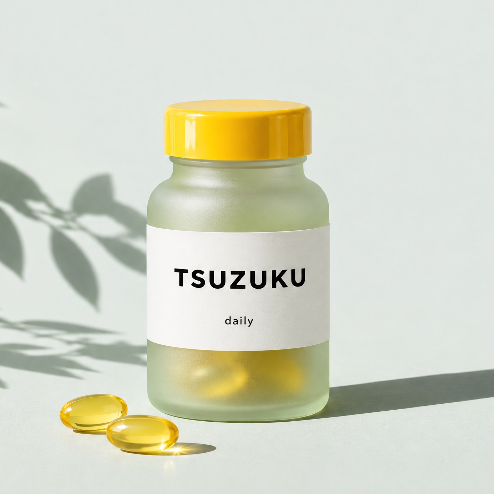

こだわり 1
のみやすい、小さめの
ソフトカプセル
長さ約1.5cm。表面がなめらかなソフトカプセルなので、水と一緒にするっと飲めます。
お電話でのご注文0120-XXX-XXX
ビタミン13種・ミネラル8種を、1日2粒に。

※サンプルの数値です（架空のブランド）
はじめての方限定｜定期コース

初回特別価格（税込・送料無料）
¥1,480通常 ¥3,980
携帯用ピルケースをプレゼント。外出先でも、2粒を持ち歩けます。
※定期コースは30日ごとのお届けです。休止・解約は次回お届け予定日の5日前までにマイページからお手続きください。
そんな毎日の“足りない”を、1日2粒で手軽に補えます。
TSUZUKU daily は、ビタミンC・ビタミンD・ビタミンB1・亜鉛・鉄の栄養機能食品です。
ビタミンCは、皮膚や粘膜の健康維持を助けるとともに、抗酸化作用を持つ栄養素です。
ビタミンDは、腸管でのカルシウムの吸収を促進し、骨の形成を助ける栄養素です。
ビタミンB1は、炭水化物からのエネルギー産生と皮膚と粘膜の健康維持を助ける栄養素です。
亜鉛は、味覚を正常に保つのに必要な栄養素です。亜鉛は、皮膚や粘膜の健康維持を助ける栄養素です。
鉄は、赤血球を作るのに必要な栄養素です。
※栄養素等表示基準値（18歳以上・基準熱量2,200kcal）に占める割合。配合量はサンプルの数値です。
| ビタミンA | 300µg |
|---|---|
| ビタミンB1 | 1.2mg |
| ビタミンB2 | 1.4mg |
| ビタミンB6 | 1.3mg |
| ビタミンB12 | 2.4µg |
| ビタミンC | 100mg |
| ビタミンD | 10µg |
| ビタミンE | 6mg |
| ビタミンK | 60µg |
| ナイアシン | 13mg |
| パントテン酸 | 5mg |
| 葉酸 | 240µg |
| ビオチン | 50µg |
| カルシウム | 100mg |
|---|---|
| マグネシウム | 50mg |
| 鉄 | 5mg |
| 亜鉛 | 5mg |
| 銅 | 0.3mg |
| マンガン | 1mg |
| セレン | 15µg |
| ヨウ素 | 50µg |
長さ約1.5cm。表面がなめらかなソフトカプセルなので、水と一緒にするっと飲めます。
原料の受け入れから充てんまで、国内の工場で管理しています。出荷前の検品も欠かしません。

毎日口にするものだから、余計なものは入れない。中身はすべて、成分表でお見せしています。

厚さ2.5cmの薄型の箱でお届け。受け取りのために家にいる必要はありません。
横にスワイプして読めます

2粒なら、朝のコーヒーのついでに飲めます
何粒も飲むサプリは続きませんでした。粒が小さくて、飲み忘れても次の日に戻りやすいです。
30代・会社員（定期コース8か月）

成分表がはっきりしていて、選びやすかった
何がどれだけ入っているか全部書いてあるので、ほかに飲んでいるものとも比べられました。
30代・エンジニア（定期コース5か月）
ポストに届くので、受け取りが楽です
仕事で帰りが遅いので、再配達がないのが助かります。休止もマイページですぐできました。
40代・会社員（定期コース1年）
※サンプルのため、レビュー・人物は架空です（写真はAI生成）。個人の感想であり、効果を示すものではありません。
［氏名］
管理栄養士（架空の人物）
「栄養は、まず食事から。そのうえで、足りない日を補う手段として、続けやすい形のものを選ぶのがおすすめです。」
サプリメントは、毎日続けられるかどうかがいちばん大切です。粒の大きさや数、成分の分かりやすさは、選ぶときの大事な目安になります。
※本コメントは製品の効果を保証するものではありません（サンプルの記載）。
でも…サプリって続かないし、粒が大きいのは苦手…
安心してください！
1日2粒、小さめのソフトカプセル。定期コースは、いつでも休止・解約できます。
はじめての方限定｜定期コース
¥1,480初回（税込・送料無料）
定期コースを申し込むまずは1回だけ試したい方
¥3,980（税込）＋送料 ¥5501回だけ購入する回数のしばりはありません。1回目のお届け後でも休止・解約できます。
30日・45日・60日から選べます。マイページから変更できます。
お薬を服用中の方、通院中の方、妊娠中・授乳中の方は、医師や薬剤師にご相談のうえお召し上がりください。
原材料の一部にゼラチンを使用しています。詳しくは原材料表示をご確認ください（サンプルの記載）。
成人向けの量で作っています。お子さまへのご使用はお控えください。
クレジットカード、コンビニ後払い、Amazon Pay に対応しています（サンプルの記載）。
はじめての方限定｜定期コース